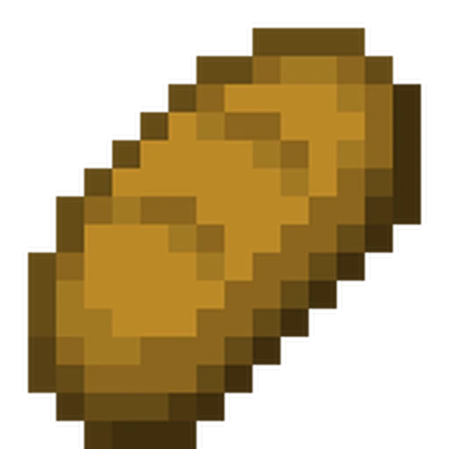
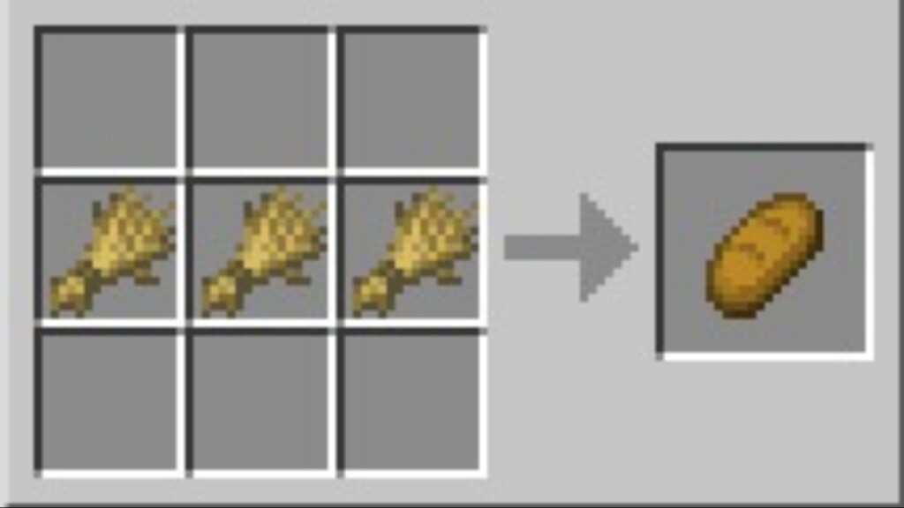

Bread: Simple and Delicious!

Bread, is such a simple substance. But with the efforts of world class chef Todd, and this recipe he found off the internet. You WILL ENJOY MY BREAD.
Ingredients
-
Crafting Table(this will require 4 planks of any type)
-
3 Wheat (this can be obtained from planting seeds)
Steps
-
Place Crafting Table
-
Place wheat is the pattern shown below

-
YOURE DONE
GREAT JOB!!
click this to return to home page